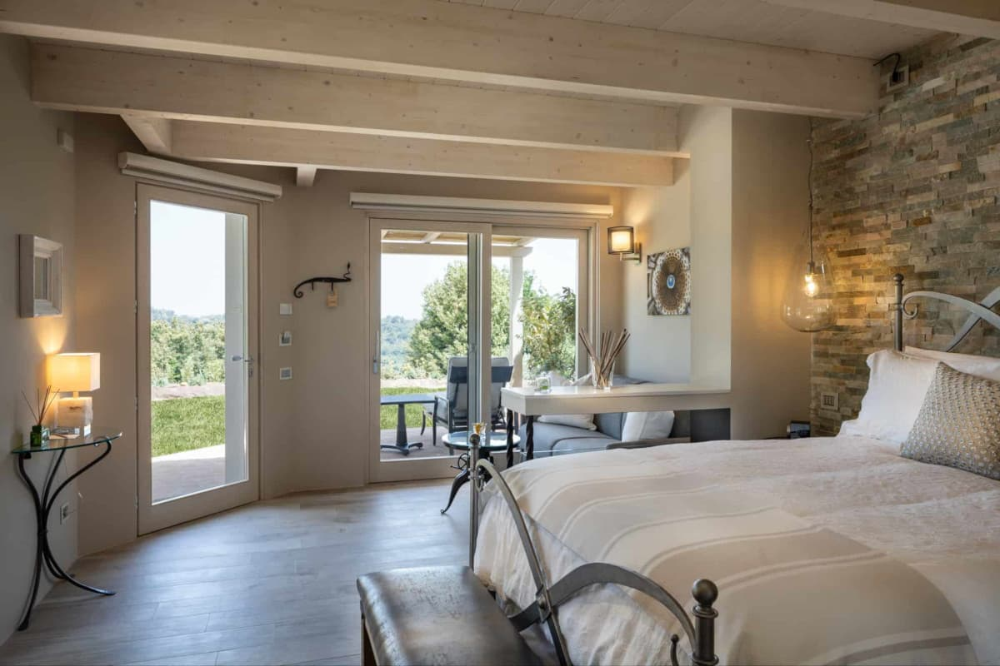
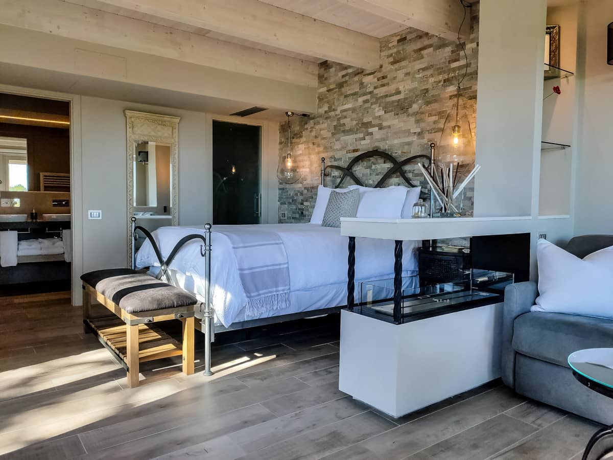
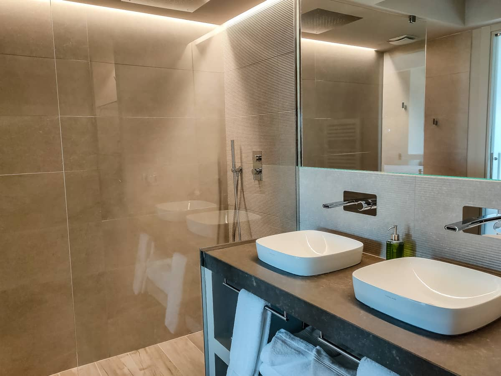
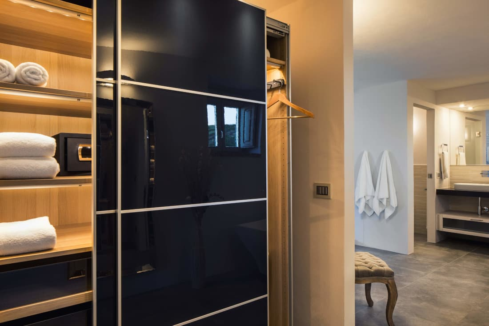

Unsere Räumlichkeiten
Jede unserer luxuriösen Suiten ist auf Ihren Komfort ausgelegt. Entspannen Sie sich vor einem romantischen Kamin, trinken Sie ein Glas Wein und fühlen Sie sich erfrischt unter einer Regendusche. Genießen Sie panoramische Ausblicke auf die Toskana von Ihrer privaten Terrasse, während Sie auf einer Liege entspannen. Unsere Unterkünfte in Montepulciano werden Sie begeistern und tragen zu Ihrem neuen Gefühl von Frieden und Ruhe bei.
|  |  |
|---|---|
|  |  |